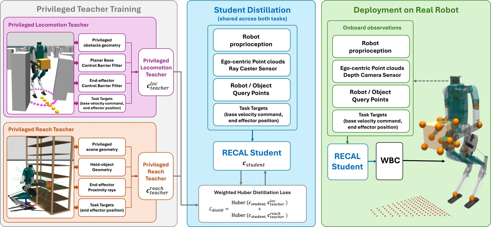
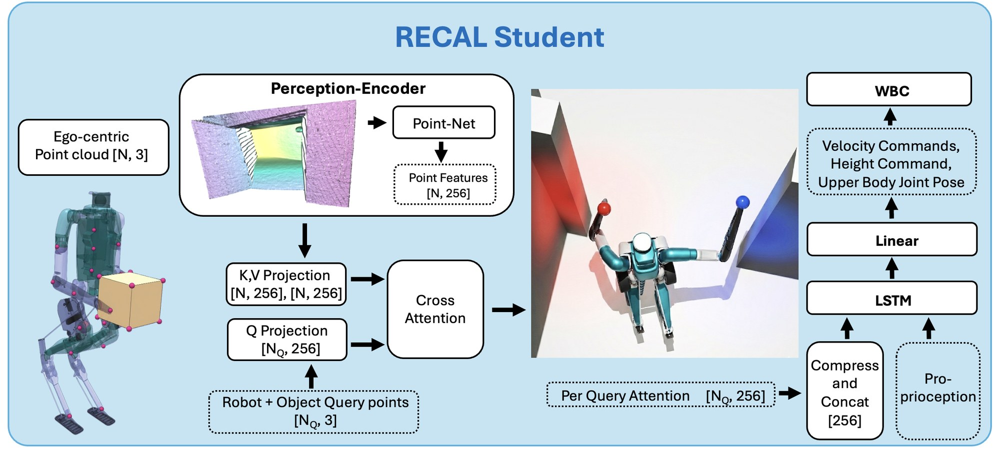
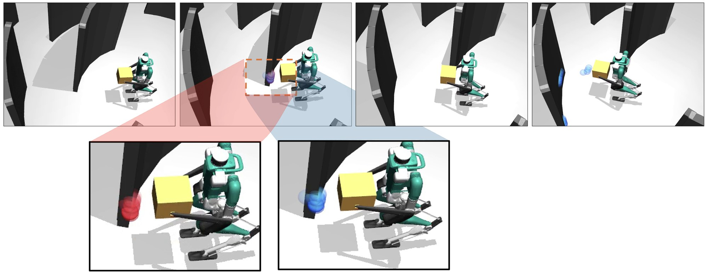
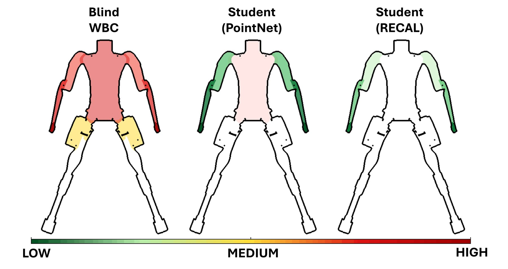

Abstract
Humanoid robots often execute motion commands through whole-body controllers (WBCs) that track targets while maintaining balance and stability. However, most WBCs are blind to scene geometry, which can lead to collisions from imperfect target motions that are geometrically unsafe due to perception, planning, or teleoperation errors. We propose RECAL, a Robot–Environment Cross-Attention Layer that wraps a blind WBC to trade off target tracking against collision avoidance using external scene geometry. RECAL supports collision-aware tracking of floating-base and end-effector commands, including collision avoidance for held objects. It represents the robot, held objects, and environment as point clouds, using cross-attention between robot/object points and the environment to produce geometry-aware control features. In simulation, RECAL improves collision avoidance while preserving target-tracking performance across frozen-arm and adaptive-arm locomotion, object-carrying, and standing-manipulation scenarios relative to alternative geometry-aware WBC architectures. We further demonstrate the controller on a real Digit V3 humanoid robot.
Real-Robot Demonstrations on Digit V3
We deploy RECAL on a Digit V3 humanoid across all five tasks. Locomotion commands come from a human teleoperator, and reaching targets come from the same end-effector command generator used in training; neither is guaranteed to be collision-free. RECAL adjusts each command before it reaches the blind WBC, moving the base, arms, and any held object around nearby obstacles, and resumes tracking the original command once it is safe to do so. The scene is perceived with two Intel RealSense D455 depth cameras mounted at chest and pelvis height.
Method
Rather than requiring upstream systems to provide complete, collision-free whole-body references, RECAL treats incoming targets as guidance and resolves local geometric conflicts at the control level. Privileged teachers for locomotion and reaching generate safe commands, and both are distilled into a single observation-only student. At deployment, RECAL uses only proprioception, an egocentric point cloud, and robot/object query points to modify the target commands sent to an existing, frozen WBC.

System overview. Privileged locomotion and reach teachers are distilled into one RECAL student, which adapts commands for a blind WBC on the real robot.
Points sampled on the robot body and held object act as queries into the environment point cloud. Cross-attention produces a geometry-aware feature for each query point. These features are compressed, concatenated with proprioception and the input command, and passed through a recurrent command adapter that outputs the modified WBC command.

RECAL architecture: robot and object query points cross-attend to the egocentric environment point cloud.
Results
Blind WBC vs. RECAL in Simulation
In simulation, the blind WBC (orange) follows the reference straight into obstacles, while RECAL (teal) deviates just enough to stay collision-free and then rejoins the commanded path.
Blind WBC vs. RECAL on locomotion and shelf-reaching tasks in simulation.
Collision-Free Success Rate
Collision-free success rate on the Hard variant of each task, averaged over 5 seeds. RECAL is the best deployable student on every task, outperforming PointNet and voxel scene encoders and approaching the privileged teacher.
| Method | Adaptive-arm locomotion |
Frozen-arm locomotion |
Object carrying |
Stationary reach |
Reach w/ held object |
|---|---|---|---|---|---|
| Blind WBC | 0.32 | 0.33 | 0.51 | 0.45 | 0.39 |
| Student (Voxel) | 0.21 | 0.31 | 0.52 | 0.37 | 0.29 |
| Student (PointNet) | 0.65 | 0.56 | 0.63 | 0.47 | 0.43 |
| Student (RECAL) | 0.91 | 0.86 | 0.92 | 0.81 | 0.72 |
| Privileged teacher | 0.96 | 0.89 | 1.00 | 0.87 | 0.81 |
Attention Visualization
Each robot and object query point attends over the environment point cloud. As a hand approaches a wall, its attention concentrates on the nearby surface, giving the controller a local, geometry-aware signal for avoiding that collision.
Cross-attention during locomotion in simulation (2× speed). Highlighted wall regions show where the hand query points attend.

Attention of the left-hand (blue) and right-hand (red) query points as the robot carries a box past an obstacle.
Contact Force Analysis

Average contact force on the robot body on the Hard variants of adaptive-arm locomotion, frozen-arm locomotion, and stationary reach. RECAL sharply reduces both collision frequency and impact force.
Key Contributions
- A collision-aware humanoid WBC framework that tracks floating-base and end-effector targets while avoiding collisions with the environment.
- The Robot–Environment Cross-Attention Layer, which uses robot and held-object points as queries into the environment point cloud to produce collision-aware commands for an underlying blind WBC.
- Simulation and real-robot validation showing that RECAL deviates from unsafe commands, avoids collisions, and recovers target tracking across loco-manipulation scenarios.
BibTeX
@inproceedings{gadde2026recal,
title={Collision-Aware Humanoid Whole-Body Control under Imperfect Tracking Targets},
author={Gadde, Mohitvishnu S. and Malik, Ashish and Dugar, Pranay and
Shrestha, Aayam Kumar and Li, Fuxin and Fern, Alan},
booktitle={2026 IEEE-RAS International Conference on Humanoid Robots (Humanoids)},
year={2026}
}